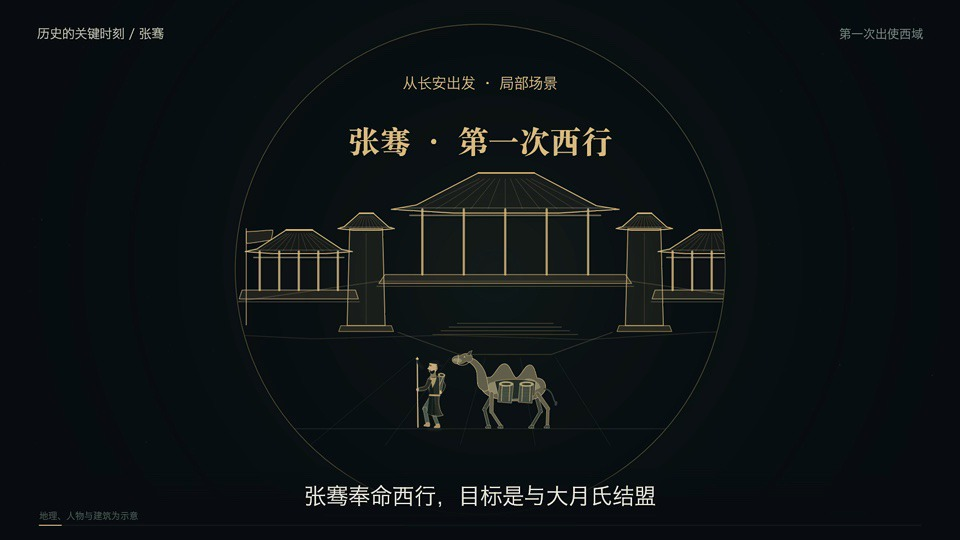
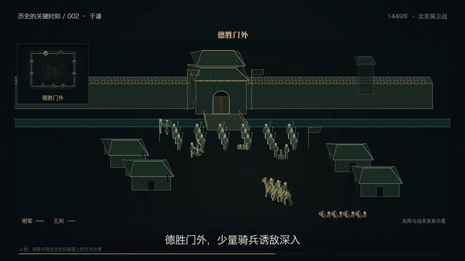
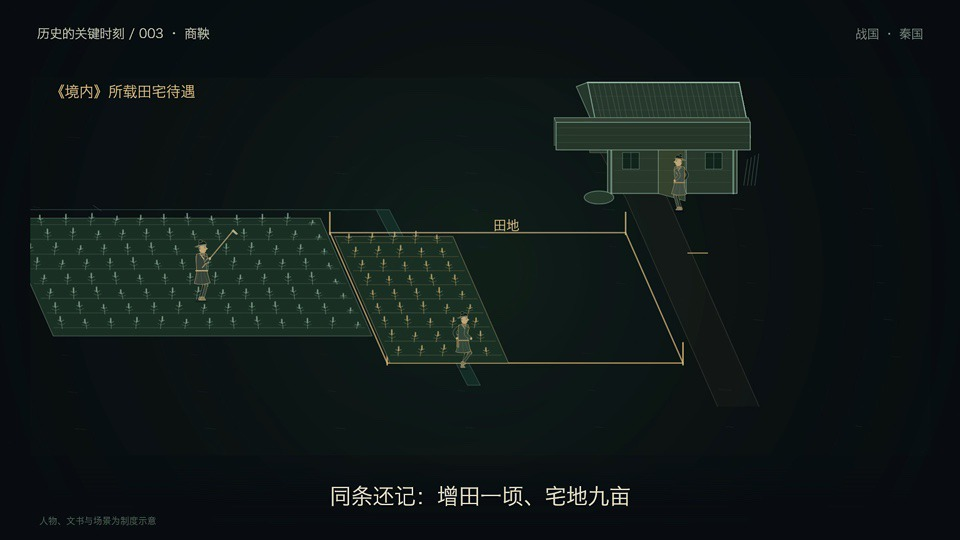

Zhang Qian: follow the journey张骞：沿路线读懂行程
Departure from Chang’an, an alliance that did not materialize, and the travel route unfold as successive visual stages in an 80-second story.从长安出发，到结盟未成，再通过路线回看行程；用逐步展开的画面串起 80 秒的叙事。
Three short films use routes, relationships, and institutional flows to explain a historical topic through a sequence of visual ideas.三集短片，分别用路线、人物关系和制度流程组织历史知识，让信息随着画面逐步展开。
Which visual structure makes a short historical explanation easier to follow: a journey, a network of relationships, or a process?一段简短的历史讲解，应该用路线、关系还是流程来组织，才能让观众更容易跟上？
Produced by Fengrui Zhang. The workflow uses code-driven visual composition and AI assistance. This collection publishes the finished films and accompanying notes; source production projects are not included.制作：Fengrui Zhang。采用代码驱动的视觉编排与 AI 辅助制作。本合集公开成片及配套说明，不公开源工程。
View collection notes on GitHub ↗查看 GitHub 影片合集说明 ↗Choose a film below to open its MP4 download on GitHub. This page loads cover images only; the video files are not embedded or downloaded automatically.通过下方链接前往 GitHub 下载 MP4。本页只加载封面图片，不嵌入视频，也不自动下载成片。

Departure from Chang’an, an alliance that did not materialize, and the travel route unfold as successive visual stages in an 80-second story.从长安出发，到结盟未成，再通过路线回看行程；用逐步展开的画面串起 80 秒的叙事。

The defense outside Desheng Gate is explained through tactical relationships and coordination of military supplies, using sequence and emphasis to guide the viewer.围绕德胜门外的防守，呈现战术关系与军粮协同，通过出现顺序与重点提示引导理解。

A visual flow separates assessment of military merit, rank, land and housing rewards, and appointment to command. Accumulating merit is not shown as automatic promotion to general.用流程区分军功核定、授爵、田宅奖励与将领任用，避免将军功增长画成自动升任将军。
A route provides a shared reference as the narrative moves between places and stages.随着叙事推进，路线持续提供位置与阶段的参照。
The order in which people and connections appear helps a viewer follow a situation without introducing every detail at once.通过人物与联系的出现顺序，逐步解释局势，避免一次堆入全部信息。
A process connects actions and consequences into a sequence that can be explained and revisited.把行动与结果连接为可逐步讲解、可回看的流程。
The production combines code-driven composition with AI assistance to organize short visual sequences. The emphasis is on readable information, a clear narrative order, and pacing that fits an 80–96 second film. The visuals are educational diagrams and narrative illustrations, with simplifications of geography, relationships, and historical detail.制作过程结合代码驱动的画面编排与 AI 辅助，组织简短的视觉段落，重点是信息可读、叙事顺序清晰，以及适合 80–96 秒时长的节奏。画面属于教学示意与叙事表达，对地理、人物关系和历史细节作了简化。
Production: Fengrui Zhang. Music: 艾拉拉、Luv4《千年之后》（氛围版）.制作：Fengrui Zhang。音乐：艾拉拉、Luv4《千年之后》（氛围版）。
The finished MP4 videos and their music are not licensed under MIT.完整 MP4 成片与音乐不采用 MIT 许可。 Rights & credits ↗权利与署名说明 ↗
Playback and download behavior depend on the browser and GitHub. This portfolio page links to video files hosted on GitHub.播放或下载行为取决于浏览器与 GitHub；本作品集页面提供外部文件链接，不提供内嵌播放器。